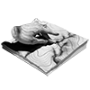
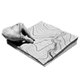
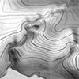
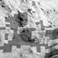
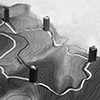
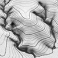

Research
-

Tangible landscape
Tangible Landscape couples a malleable physical model of a landscape with a digital landscape through a cycle of real-time scanning, analysis, and projection. As users change the physical model — sculpting landforms in polymeric sand — the changes are 3d scanned into an open source geographic information system in which landscape processes are then simulated and projected back onto the physical model, all in real-time. Thus users can directly, intuitively shape and interact with their coupled physical-digital model while being informed by geospatial analytics. With Tangible Landscape users draw upon both the intuitive, creative nature of drawing and modeling by hand and the analytics, precision, and dynamism of geospatial modeling.
Details
- Aims
To make geospatial analytics more intuitive
To encourage creative decision making
To enhance spatial learning
- Objectives
To develop a highly intuitive system for designing, modeling, and analyzing space
- Publications
GIS-based environmental modeling with tangible interaction and dynamic visualization
- Code
- Aims
-

Tangible topography
Bridging the physical - digital divide in spatial learning. A study of how analog, digital, and hybrid analog-digital technologies change the way people learn about topography. As an experiment research subjects will study and model landforms by hand, in a 3D modeling program, and with Tangible Landscape. By quantitatively comparing the resulting models and by interviewing select subjects we hope to gain insight into spatial learning processes.
Details
- Research team
Brendan Harmon, Anna Petrasova, and Vaclav Petras
- Aim
To gain insight into spatial learning processes.
- Objectives
To compare the role different technologies play in spatial learning
- Research questions
How do traditional, analog methods for modeling and studying topography effect spatial learning?
How do digital methods for modeling and analyzing topography effect spatial learning?
How do hybrid analog-digital methods for modeling and analyzing topography effect spatial learning?
How do different geospatial analytics effect spatial learning?
- Methods
Experiments
Participant observation
Surveys
Semi-structured interviews
- Research team
-
Experiment
Sculpting
Sculpt a sand model of an existing site using contours and the DEM
Sculpt a sand model of an existing site using contours, the DEM, and scanned contours
Sculpt a sand model of an existing site using contours, the DEM, and the difference
Sculpt a sand model of an existing site using the existing and scanned overland hydrologic flow
3D modeling
Sculpt a NURBS surface model in Rhino of an existing site using 2D contours
Form
Estimate the slope at given points on a landform
Estimate the slope at given points on a landform using the DEM
Estimate the slope at given points on a landform using the slope
Estimate the slope at given points on a landform using the slope with a legend
Identify whether the curvature at given points on a landform is concave or convex
Landform
Identify the landforms in a landscape
Vertical exaggeration
Estimate the unexaggerated slope at given points on a landform with x2 vertical exaggeration using contours, the DEM, and a horizontal scale
Dynamic landforms
Sculpt landforms with sand
Sculpt landforms with sand using geomorphons
Ongoing research

Tangible landscape evolution
I am developing a simple, fine-scale, short term landscape evolution model using a path sampling method to solve water and sediment flow continuity equations and model mass flows over complex topographies based on topographic, land cover, soil, and rainfall parameters. So far I have implemented a gully evolution model for a detachment limited soil erosion regime with spatially variable landcover as python script in GRASS GIS. I plan to add deposition to the model, generalize the model for all hydrologic soil erosion regimes, simulate temporally variable dynamics, test the model on historical data, test the model with field data, empirically calibrate the parameters, and prepare the model as a set of add-ons for GRASS GIS.
Details
- Aim
To realistically simulate the short term landscape evolution using water and sediment flow continuity equations
- Objectives
Add deposition to the model
Simulate temporally variable dynamics
Test the model on historical data
Test the model with field data
Empirically calibrate the parameters
Develop a family of GRASS GIS addons
Implement as a Tangible Landscape analysis
- Research questions
Can water and sediment flow continuity equations be used with high resolution data to realistically simulate short term landscape evolution?
- Testable hypotheses
This landscape evolution model can accurately simulate the historic evolution of a landscape.
- Methods
Erosion-deposition modeling
Landscape evolution modeling
- Code

Tangible disease spread
We are integrating a disease spread model for sudden oak death with Tangible Landscape. Our goal is to enable stakeholders to computationally steer scientific simulations intuitively so that they can learn hands-on how landscape processes unfold and how they can be managed.
Details
- Research team
Francesco Tonini, Douglas Shoemaker, Anna Petrasova, Brendan Harmon, and Vaclav Petras
- Aims
To computationally steer a disease spread simulation intuitively
To richly visualize disease spread
- Objectives
Implement a disease spread model with Tangible Landscape
Develop disease spread scenarios
Interact intuitively with the disease spread model
- Methods
Tangible Landscape
Disease spread model for sudden oak death
Scientific rapid prototpying
Completed research

Tangible trails
Tangible Landscape can be used to rapidly and dynamically plan routes such as trail networks across a landscape — combining the ease of sketching or modeling by hand with the power of network analysis. With a paper map one can easily sketch a route, but it is hard to quantitatively compare routes much less optimize one. With digital maps, on the other hand, digitizing points can be laboriously, but one can compute optimal routes. With Tangible Landscape, designers can place markers such as wooden blocks by hand to simultaneously mark trailheads, viewpoints, and other waypoints on both the physical and digital models. As the markers are continually scanned into a geospatial model, designers can site and digitize points without mouse and keyboard. As designers place markers to designate waypoints, the optimal route across the landscape between these waypoints is computed in near real-time. By quickly and intuitively exploring different trail scenarios in Tangible Landscape designers can combine creative exploration with the rigor of geospatial analytics.
Details
- Research team
Brendan Harmon and Anna Petrasova
- Aim
To encourage the creative, collaborative, analytically informed design of trails
- Methods
Suitability mapping
Iterative least cost path analysis based on walking energetics and suitability
The traveling salesman problem
- Publications
Scientific rapid prototyping
Rapid prototyping can be used to create very precise landscape models for scientific analysis and visualization. I have developed methodologies for modeling and fabricating landscapes using 3d printing, cnc routing, vacuum forming, and mold making. With molds malleable, sculptable models can be cast out of polymeric sand for experimentation, design exploration, and use with Tangible Landscape.
Details
- Aims
To create precise models of complex landscapes
To create malleable, sculptable models that can be easily recast
- Methods
Lidar
Terrain modeling
3d printing
Cnc routing
Vacuum forming
Mold making
Future research

Tangible landscape architecture
A design project to explore the potential of Tangible Landscape modeling. I will use Tangible Landscape modeling with a landscape evolution model to design, test, and compare bioswales for erosion control. Ideally I will then build and monitor a bioswale on an experimental site to test the design, test the landscape evolution model, and empirically calibrate the model parameters.
Details
- Aims
To design and test an effective bioswale that is dynamically shaped by processes
- Research questions
How can Tangible Landscape transform the design process? What new ways of designing does it enable?
How can an anthropogenic landscape weather larger scale and long-term dynamics without becoming degraded?
How can anthropogenic landscapes be designed to be dynamic?
How could an aesthetics of change be expressed? What poetics, what aesthetic strategy could be used?
- Testable hypotheses
A dynamic bioswale designed and shaped by processes can adaptively regulate erosion and deposition to make an anthropogenic landscape resilient to storms.
- Methods
Tangible Landscape
Erosion-deposition modeling
Landscape evolution modeling
Erosion monitoring
Design | build
Lidar time series
Drone imagery time series
Tangible futures
FUTURES is a model that uses a stochastic patch-growing algorithm to simulate land change. We aim to make a highly intuitive spatial decision support system for planning and managing landscapes and cities by integrating FUTURES with Tangible Landscape modeling. This would enable scientists, decision-makers, and stakeholders to intuitively and collaboratively interact with land change models and visual the impacts. As a decision support system Tangible Futures should promote awareness, encourage collaboration, and build consensus.
Details
- Research team
Brendan Harmon, Douglas Shoemaker, Anna Petrasova, Vaclav Petras, and Francesco Tonini
- Aims
To interact intuitively with FUTURES
To richly visualize FUTURES
- Objectives
Integrate FUTURES with Tangible Landscape
Physcially model landscapes at scales from 10 sq km to 100 sq km
Use multi-criteria decision analysis to evaluate scenarios
Develop a decision support dashboard
- Methods
Tangible Landscape
FUTURES
Scientific rapid prototpying
Multi-criteria decision support